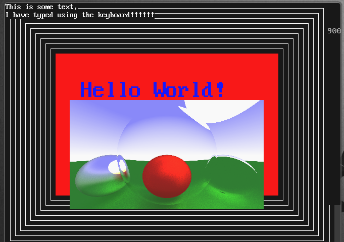
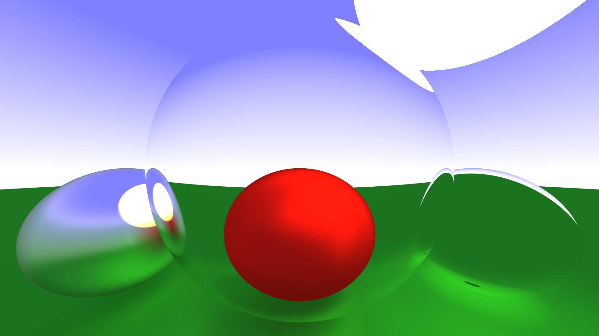
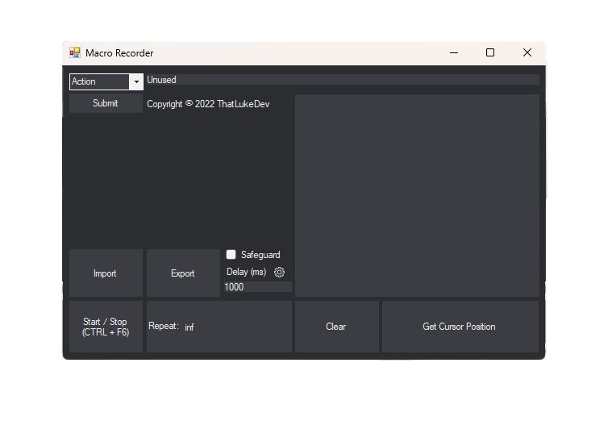
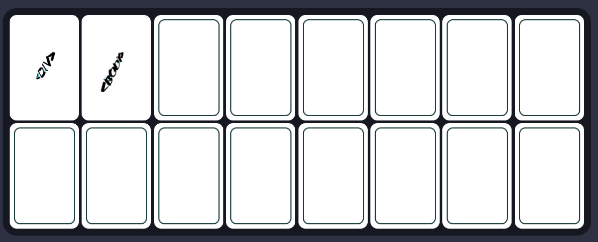

_
Luke Hardaker

About Me
Hi there! My name is Luke. I am a student at UTC Leeds and I enjoy programming. Ever since I was young, I've been fascinated by technology. I find the fact that most of the world is dependant on devices that they know little about fascinating. Programming has become my new way of expressing this, taking on after my origins messing with CMD. At UTC Leeds, I'm fortunate to be surrounded by a supportive community of like-minded individuals.
Hi there! My name is Luke. I am a student at UTC Leeds and I enjoy programming. Ever since I was young, I've been fascinated by technology. I find the fact that most of the world is dependant on devices that they know little about fascinating. Programming has become my new way of expressing this, taking on after my origins messing with CMD. At UTC Leeds, I'm fortunate to be surrounded by a supportive community of like-minded individuals.
Minimus
This is my OS,
that I made.

Raytracer
This is an image that was
generated by my raytracer,
which I coded in C++

Macro Recorder
This is my macro recorder
I coded it in C# using Windows Forms

Work experience
A card game me and Jakub made for Parallax,
it can be found here.

My Portfolio
Luke Hardaker